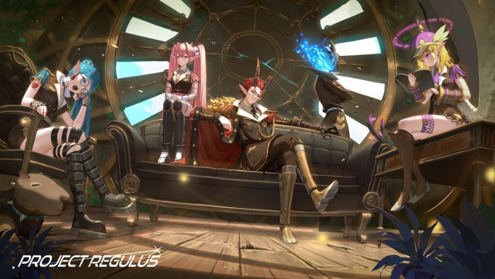

3D RPG Fantasy Game
Regulus

Game Details
Feature Contribution
- Worked as an intern Unity C# and Unity Programmer for 2 months and a
week
- Worked on Agile Methodology including daily meeting, and sprint review for the game
- Developed different quick prototypes to test ideas from game designer
- Maintained and Developed Clean Code Structure along with Object-Oriented
Programming
in the
project
- Communicating with game designers and developers to have shared
understanding on the task
- Taking feedbacks and discuss to find the best method from game directors and
senior developers